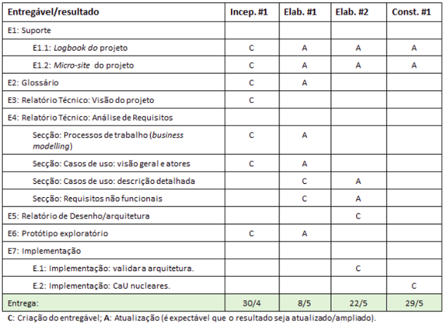
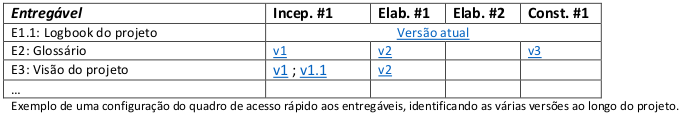
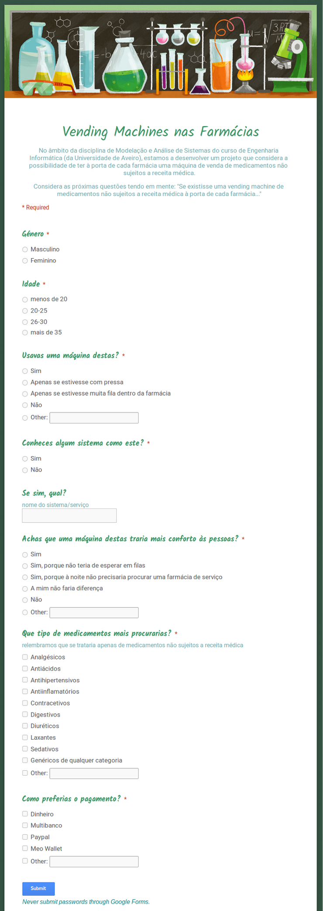
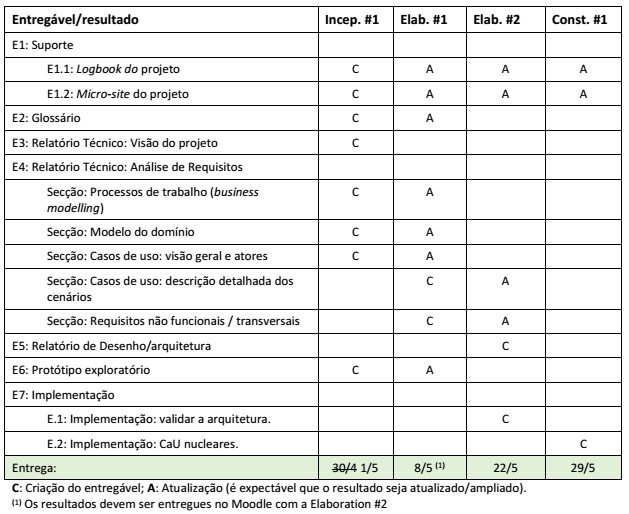

22/04/15
início
na pasta partilhada dos alunos para o trabalho P3, foram criados vários documentos:
- glossário (para já apenas com descrição do que se pretende)
- visão do projeto (para já apenas com descrição do que se pretende)
- logbook (o presente documento)
começou-se nesta data a analisar o trabalho pela frente e em algumas estratégias pelas quais podemos começar a enveredar.
importante a ter em mente:

(questão para fazer ao professor: o Incep. #1 não deveria ser para entregar dia 1/05?)
referências úteis da OpenUP apontadas pelos docentes:
- desenvolver uma visão partilhada da solução
- especificação conduzida por casos de utilização
- produtos da especificação de requisitos
micro-site
descrição: “Cada grupo deve criar um micro-site (uma página ou um grupo pequeno de páginas e recursos) de apoio ao projeto. O micro-site funciona como o índice da documentação/resultados produzidos no projeto. Tem de estar on-line, embora possa não ser público (i.e., pode ser partilhado apenas com os docentes).
O micro-site tem de incluir os seguintes obrigatórios (pode ser acrescentados outros):
”

ideias:
- criar um site em html
- ou criar com jekyll?
- pode pôr-se tudo no codeUA?
- o que está a ser escrito neste documento pode vir a ser incorporado numa das páginas do micro-site, a fim de transformar este logbook numa espécie de blog
- problema: pode não ser completamente confortável
23/04/15
este logbook encontra-se já no repositório do projeto no codeUA, pelo que as referências acima sobre a pasta partilhada deixaram de fazer sentido (tratava-se da pasta partilhada que o grupo mantém no google drive)
decidiu-se fazer o site em html e usar o template TXT (do site acima referido)
foi criado o protótipo:
- os desenhos foram feitos com a ferramenta Pencil
- essas imagens foram depois postas no InVision
- bárbara: protótipo + html
- joão: E4.1 (processos de trabalho)
- miguel: E4.2 (casos de uso: visão geral e atores)
25/04/15
cada membro do grupo ficou responsável por escrever uma mini biografia para pôr na apresentação da equipa
ideias para nome do produto
- QuiosquePharma
- PharmaMachine
26/04/15
considerámos a possibilidade de “visitar” algumas farmácias em aveiro e entrevistarmos os farmacêuticos
- (primeiro precisamos saber qual é a autoridade/entidade que gere as farmácias - basta averiguar isto na primeira farmácia)
- compraria (o farmacêutico ou a entidade, dependa do que for apurado) uma máquina destas?
- acha que as pessoas iriam aderir?
- que necessidades acha não seriam satisfeitas na venda ao público?
- considera que este serviço seria útil, especialmente considerando que poderia ser mais seguro do que ter farmácias de serviço (abertas à noite, portanto)?
- acha que estas máquinas seriam prováveis alvos de vandalismo ou assalto?
bárbara fez um inquérito (através do google forms) para fazer um pouco de estudo de mercado/cliente e divulgou-o pelas redes sociais
(print do inquérito a seguir)
27/04/15
definição do nome do produto: PharmaMachine
decidiu-se que o grupo se irá separar para fazer as entrevistas aos farmacêuticos: vamos mapear as várias farmácias da cidade e vão ser atribuídas 2 farmácias a cada membro do grupo
farmácias existentes em aveiro
- farmácia oudinot
- farmácia central
- acha que as pessoas iriam aderir?
- farmácia moura
- farmácia neto
- farmácia moderna (na praça do tribunal)
- farmácia na rua mário sacramento
- bárbara
- oudinot - Rua do Engenheiro Oudinot 28
- moura - Rua Fernão De Oliveira 12
- joão
- central - Rua dos Mercadores 26
- neto - R. de Passos Manuel 4A
- miguel
- moderna - R. dos Combatentes da Grande Guerra
- nova - Rua Mário Sacramento, 131
miguel ficou de melhorar o “Caso de uso: visão geral e atores” e o joão vai fazer “Processos de trabalho (business modelling)” (como dedicido anteriormente)
28/04/15
decidiu-se que a forma de inserir o micro-site não tinha lógica, portanto vamos passar a pôr uma pasta zipada
- a formatação das páginas depende do tema (que inclui o CSS) e, se as páginas principais (home, about, deliverables, materiais) fossem inseridas individualmente, apareceriam completamente desformatadas
29/04/15
tendo em conta que os quiosques podem ser alvos de assalto e vandalismo, achamos estes devem ser embutidos na parede para minimizar danos
joão não conseguiu ir às duas farmácias: ele fica com a farmácia neto e a bárbara vai à farmácia central
Respostas que obtivemos no inquérito do estudo de mercado/cliente:

30/04/15
decidimos que os quiosques devem enviar um relatório com o ponto da situação (com estatísticas dos medicamentos mais procurados, com possíveis avisos de stock e manutenção, podendo conter mais informações relevantes) quinzenalmente
os quiosques devem enviar um aviso de que o stock de um medicamento está prestes a acabar quando a quantidade desse medicamento no quiosque chegar a cinco. este aviso é enviado para a central de controlo e esta avisa a farmácia correspondente que deve repôr o medicamento em causa
Resultados das entrevistas com os farmacêuticos (os nossos stakeholders):
Ficámos a saber que, se estes quiosques já existissem, seria a própria farmácia que decidiria se queria adquirir um quiosque (e não uma entidade superior, como o Infarmed).
Perguntas que fizemos em cada farmácia:
- Compraria uma máquina destas?
- Acha que as pessoas iriam aderir?
- Que necessidades acha não seriam satisfeitas na venda ao público?
- Considera que este serviço seria útil, especialmente considerando que poderia ser mais seguro do que ter farmácias de serviço (abertas à noite, portanto) ?
- Acha que estas máquinas seriam prováveis alvos de vandalismo ou assalto?
Farmácia Nova
- Compraria dependendo das circunstâncias de negócio. Uma máquina dessas teria de passar por bastantes testes para entrar na minha farmácia, mas penso que seria uma ferramenta bastante útil para reduzir filas e para os dias em que nos encontramos fechados para as pessoas que necessitem de medicamentos simples.
- Bom, como estamos numa era totalmente tecnológica penso que sim, como qualquer criança quer experimentar o brinquedo novo. Mas as pessoas idosas, que são o nosso público alvo, penso que não. A longo prazo as pessoas iam aderindo.
- Como é obvio essa é a desvantagem (das pessoas idosas) e o problema desse sistema que me ocorre, é o facto de as receitas medicas não poderem sem levantadas nessa máquina.
- Em questão de segurança, no nosso caso acho, que não seria útil, se bem que podíamos ter sempre a oportunidade de vender algo durante a noite.
- É uma questão difícil, mas penso que sim pois era um serviço que supostamente estaria disponível a noite.
Farmácia Moderna
- Sim, compraria esse dispositivo, apesar de não gostar muito dessas tecnologias, pois estão sempre a encravar ou a dar problemas.
- Os nossos clientes são cerca de 90% de idosos por isso penso que não, pois penso eu que não têm grande interesse por isso.
- Certamente que essa máquina não teria a capacidade de aviar receitas, logo o ponto fraco de não satisfaria os clientes.
- Útil penso que seria, mas como não temos grandes clientes à noite não sei se seria útil o investimento.
- Muito bom, nem tinha pensado nisso, mas acho sinceramente que não duraria muito a ter ser assaltada ou vandalizada, e ainda o resto da farmácia só pelo simples facto de ter uma máquina dessas.
Farmácia Oudinot
- Teria que avaliar e perceber quais os medicamentos em causa porque nem todos podem estar livremente a venda, alguns nem faria sentido. Todos os medicamentos, mesmo os não sujeitos a receita médica, devem ter aconselhamento profissional.
- O utente, acho que sim.
- Faltaria precisamente o aconselhamento adequado.
- É mais seguro na ótica da farmácia. Mas ao fazer uma dispensa de um medicamento, nós temos uma responsabilidade.
- Isso de certeza, basta a intenção ser má.
Farmácia Moura
- Julgo que não. Acho que independentemente de os medicamentos serem ou não sujeitos a receita médica, deve haver um responsável para tirar dúvidas e dar as devidas precauções (ex: pílula dia seguinte).
- Alguns, talvez. À população mais jovem penso que daria algum jeito para não terem muita responsabilidade (como no exemplo da pílula dia seguinte).
- O acompanhamento por um responsável habilitado, a informação que não seria passada.
- Em termos de segurança à noite, não me parece que seja um ponto muito forte, porque há farmácias que não abrem a porta, passam só o medicamento por um pórtico na porta.
- Isso deve ser um dos pontos fracos que saltam logo à ideia de uma pessoa. Ainda para mais no caso de um medicamento que alicia por estar tão reservado.
Farmácia Central
- Depende dos produtos que fossem vendidos, porque em termos de segurança em alguns medicamentos não é viável o utente ter acesso direto.
- Sim.
- A parte da segurança, falta de informações acerca dos medicamentos, para que servem e como devem ser usados.
- Não, a posição o farmacêutico é essencial.
- Sim.
Farmácia Neto
- A compra do equipamento dependeria de acordos e protocolos.
- Talvez, porém a farmácia não apoia a automedicação.
- Não haveria aconselhamento por parte de um profissional.
- + 5. Não acho que seria seguro, pois seria um grande alvo de vandalismo e roubos, como são por exemplo as máquinas de contracetivos que se encontram no exterior das farmácias.
03/05/15
a tabela dos deliverables mudou:

distribuição de tarefas esta semana (elaboration #1) :
- bárbara
- logbook: atualização
- micro-site: atualização
- glossário: atualização (quando necessário)
- modelo do domínio: criação (não criámos a semana passada porque não constava do plano inicial pelo qual nos estavamos a seguir - como se pode ver na entrada do dia 22/04/15 deste logbook)
- protótipo exploratório: atualização
- joão
- processos de trabalho: atualização
- requisitos não funcionais / transversais: criação
- miguel
- caso de uso da visão geral e atores: atualização
- caso de uso da descrição detalhada dos cenários: criação
10/05/15
bárbara atualizou protótipo de acordo com as recomendações dadas pelos professores na apresentação da Inception#1 : InVision
distribuição de tarefas da elaboration #2 :
- bárbara
- logbook: atualização
- micro-site: atualização
- organizar tudo segundo os modelos dados
- joão
- requisitos não funcionais / transversais: atualização
- relatório de desenho/arquitetura: criação
- miguel
- caso de uso da descrição detalhada dos cenários: atualização
- validar a arquitetura: criação
24/05/15
“E7.2: Implementação dos casos de utilização mais importantes, como se descreve a seguir.
Os grupos devem priorizar os casos de utilização e identificar aqueles que representam a funcionalidade central da solução. Estes casos de utilização devem ser implementados, como uma aplicação web. [não iremos implementar como uma aplicação web, pois o nosso projeto é sobre uma rede de quiosques. a nossa implementação está a acabar de ser feita, sendo que se está a fazer isso em WPF, utilizando a ferramenta Visual Studio]
O grau de sofisticação da implementação é variável e depende dos conhecimentos já adquiridos pelos elementos da equipa, mas, no mínimo, consiste num conjunto de páginas, instaladas num servidor, em que se pode experimentar o fluxo principal da aplicação. Para esta implementação, deve ser usado um ambiente de programação e não um ambiente de prototipagem rápida (e.g.: inVision, Wix,...). [temos a prototipagem do projeto no invision, porém não expusemos lá toda a implementação da interface do utente, pois a nossa implementação já está a ser feita como aplicação mesmo (tal como foi já explicado no ponto anterior). o projeto no invision pode ser consultado aqui: http://invis.io/XA32NDONR]
A implementação deve ser coerente com os modelos (e.g.: reflete os cenários dos casos de utilização, utiliza os conceitos definidos no modelo do domínio).
A camada de acesso a dados é desejável, mas não obrigatória.”
como o tema deste projeto veio da execução do projeto de IHC, a implementação será feita em MAS e IHC. da UC de MAS apenas a bárbara trabalhará nesta parte (tendo como colega em IHC o aluno Rui Neto de ECT). assim, os membros do restante grupo ficam dispensados esta semana.
questão para fazer ao docente: visto que a implementação do nosso sistema será em WPF, o que devemos entregar? todo o projeto feito no visual studio + o executável da aplicação? ou apenas o executável? (nota: não corre em linux)
25/05/15
docente respondeu que temos de apresentar a aplicação num site. também mencionou que, além disso, podemos entregar a app versão desktop para valorizar o trabalho.
26/05/15
bárbara ficou de fazer a implementação do site da aplicação
- decidiu usar html5 com um template: Brushed (http://themes.alessioatzeni.com/html/brushed/ ou http://designscrazed.org/free-responsive-html5-css3-templates/)